Examples#
Runnable, self-contained scripts demonstrating every module of
physicskit.semiclassical – WKB/Bohr-Sommerfeld quantization,
semiclassical propagators, Feynman paths, the Gutzwiller trace formula and
its relatives, the Ehrenfest time, and quantum scars.
See also the narrative tutorials:
Each script in this gallery is self-contained and can be run directly with
python examples/semiclassical/<section>/<script>.py. Every script also
carries an RST module docstring as its title/description and uses # %%
markers to split narrative text from code, which is exactly what
Sphinx-Gallery renders into the pages below – the script is the source
of truth for what you see, not a copy of it.
Sections#
wkb – classical momentum, turning points, WKB wavefunctions, and Bohr-Sommerfeld (EBK) quantization, checked against the exact harmonic oscillator spectrum and eigenstates; Weyl’s law, Einstein’s torus quantization, and the Langer correction.
propagators – the Van Vleck-Morette single-trajectory propagator (with its Maslov-index caustic count), Heller’s thawed Gaussian and its time-dependent spectroscopy, and the Herman-Kluk multi-trajectory frozen-Gaussian propagator, all checked against exact quantum evolution.
gutzwiller – the exact 1D Gutzwiller trace formula, reconstructing a spectrum from a single classical periodic orbit’s action and period, and the general isolated-orbit stability amplitude; the Berry-Tabor and Balian-Bloch level densities of billiards; and Bogomolny’s transfer operator.
path_integral – Feynman’s sum over paths and the emergence of the classical path as \(\hbar\to0\).
ehrenfest – the logarithmic Ehrenfest time of a chaotic wavepacket.
scarring – quantum scars on the stadium billiard’s bouncing-ball orbit family, a Husimi phase-space view of a scarred eigenstate, and Berry’s random-wave conjecture for the eigenstates that are not scarred.
The Ehrenfest time#
How long a quantum wavepacket in a chaotic system keeps following a classical trajectory: the logarithmic Ehrenfest time of Berman and Zaslavsky, measured on the quantum kicked rotor.
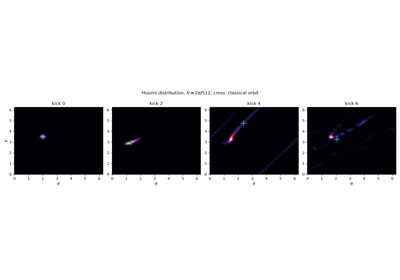
The Ehrenfest time: the log(1/ħ) breakdown of correspondence
The Gutzwiller trace formula#
The exact one-dimensional Gutzwiller trace formula, reconstructing a spectrum purely from a single classical periodic orbit’s action and period, and the general isolated-orbit stability amplitude used beyond the exactly-solvable 1D case; the quartic oscillator’s spectrum and revivals; the Berry-Tabor length spectrum of an integrable billiard; Balian and Bloch’s smoothed level density of a billiard; and Bogomolny’s transfer operator, quantizing the disk and the stadium on their boundaries.
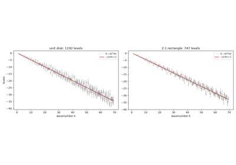
Balian and Bloch’s level-density expansion for billiards
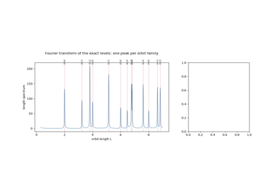
The Berry-Tabor formula: an integrable billiard’s spectrum
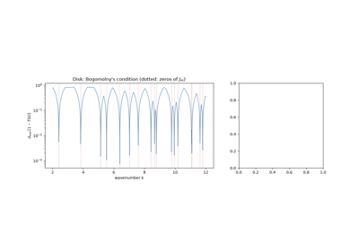
Bogomolny’s transfer operator: quantizing a billiard on its boundary
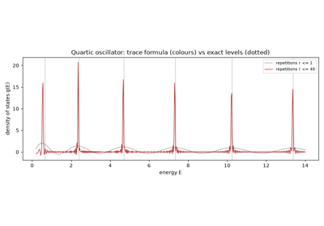
Gutzwiller’s trace formula: a spectrum from classical orbits
Feynman paths and the classical limit#
Feynman’s sum-over-histories path integral, sampled by Monte Carlo for the exactly-solvable free particle and harmonic oscillator, showing the phasor sum concentrate onto the classical (stationary-action) trajectory as \(\hbar\to 0\).
Semiclassical propagators#
The Van Vleck-Morette single-trajectory propagator, the Maslov index’s topological caustic-counting correction, and the Herman-Kluk multi-trajectory frozen-Gaussian propagator, each checked against exact quantum evolution of the harmonic oscillator, and the Van Vleck-Morette propagator in an anharmonic well, where it is only approximate; Heller’s thawed Gaussian, and its use to compute absorption spectra from short-time wavepacket dynamics.
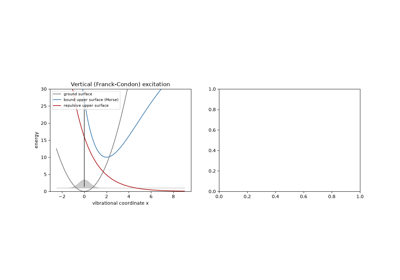
Heller’s time-dependent spectroscopy: absorption bands from short-time dynamics
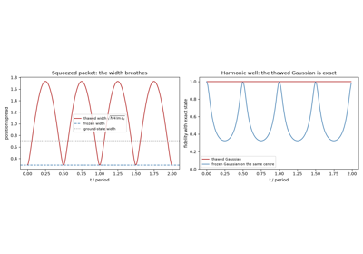
Heller’s thawed Gaussian wavepacket dynamics
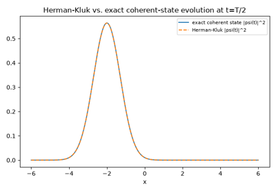
Herman-Kluk frozen-Gaussian wavepacket propagation
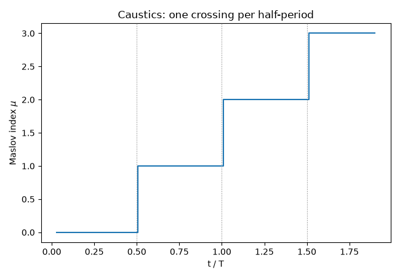
The Maslov index: caustics and Keller’s quantization condition
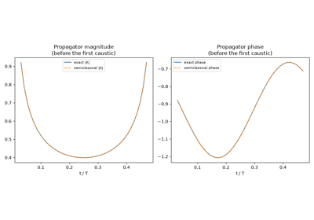
The Van Vleck-Morette semiclassical propagator
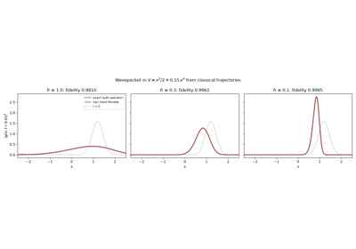
The Van Vleck-Morette propagator beyond quadratic potentials
Quantum scars#
The stadium billiard’s bouncing-ball scarred eigenstate family, the scar-enhancement diagnostic, and a Husimi phase-space view of a scarred state’s wall slice; and Heller’s wavepacket-recurrence picture of the spectrum, with Herman-Kluk propagation in a Morse well; and Berry’s random-wave description of the eigenstates that are not scarred.
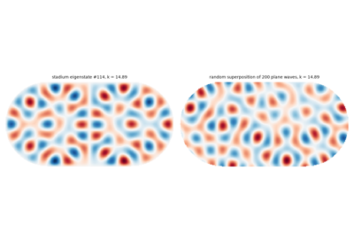
Berry’s random-wave conjecture for chaotic eigenfunctions
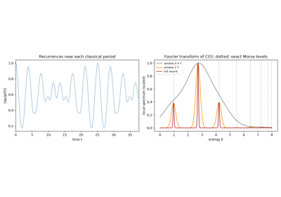
Heller and Herman-Kluk (1984): spectra from wavepacket recurrences
WKB and Bohr-Sommerfeld quantization#
The classical momentum and turning points, the WKB wavefunction, and the Bohr-Sommerfeld (EBK) quantization rule, checked against the exact harmonic-oscillator spectrum and eigenstates; Weyl’s law counting levels by phase-space volume; Einstein’s torus quantization of the circular billiard; and the Langer correction that makes radial WKB exact for hydrogen.
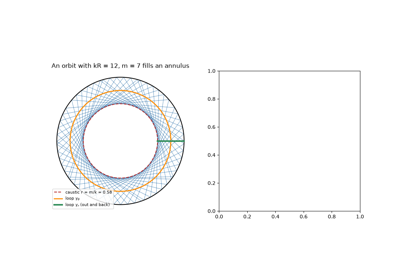
Einstein’s torus quantization: the circular billiard
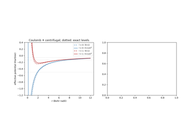
The Langer correction: exact hydrogen levels from radial WKB
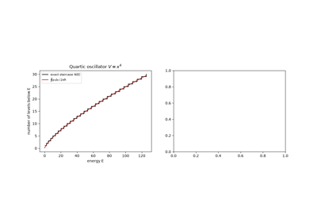
Weyl’s law: counting levels by phase-space volume